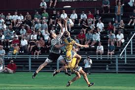
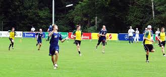

Utlimate Frisbee
Ultimate, originally known as Ultimate frisbee, is a non-contact team sport played with a flying disc (frisbee).
Ultimate was developed in 1968 by a group of students at Columbia High School in Maplewood, New Jersey. Although Ultimate resembles many traditional sports in its athletic requirements, it is unlike most sports due to its focus on self-officiating, even at the highest levels of competition.
The term frisbee, often used to generically describe all flying discs, is a registered trademark of the Wham-O toy company, and thus the sport is not formally called "Ultimate frisbee", though this name is still in common casual use. Points are scored by passing the disc to a teammate in the opposing end zone.
Other basic rules are that players must not take steps while holding the disc, and interceptions, incomplete passes, and passes out of bounds are turnovers. Rain, wind, or occasionally other adversities can make for a testing match with rapid turnovers, heightening the pressure of play.
.jpg)
From its beginnings in the American counterculture of the late 1960s, ultimate has resisted empowering any referee with rule enforcement, instead relying on the sportsmanship of players and invoking "Spirit of the Game" to maintain fair play.
Players call their own fouls, and dispute a foul only when they genuinely believe it did not occur. Playing without referees is the norm for league play, but has been supplanted in club competition by the use of "observers" or "game advisors" to help in disputes, and the professional league employs empowered referees.
Throwing and catching techniques
A player may catch the disc with one or two hands. A catch can grab the rim, or simultaneously grab the top and bottom of the frisbee – in a clap-catch / "pancake catch". Care is needed with the hand placement when catching with one hand on the disc rim, making sure to catch on the proper side of the disc, according to which way the disc is spinning. When a frisbee is thrown at high speeds, as is frequently the case in a competitive game of ultimate, one side of the disc can spin out of the player's hand, and the other side can spin into their hand, which can make a catch far more secure. For this reason, along with the desire to secure the frisbee strongly and "cleanly", the general advice is to strongly prefer a two hands if possible.
.jpg)
The most popular throws are backhand, and forehand/flick and less frequently, hammer and scoober or any other throw. Part of the area of ultimate where skill and strategy meet is a player's capacity to plot and execute on throwing and passing to outrun another team, which is colloquially known as "being a deep threat". For example, multiple throwing techniques and the ability to pass the disc before the defense has had a chance to reset helps increase a player or team's threat level, and merging that with speed and coordinated plays can form a phalanx that is hard for competitors to overcome. Apart from these formal strategies, there is also a freestyle practice, where players throw and catch with fewer limitations, in order to advance their ultimate handling skills
More about Ultimate frisbee